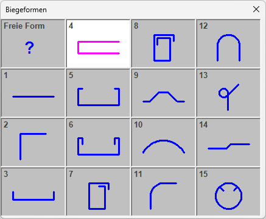
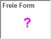

")
")
Wenn AutFol aktiviert ist (untere Menüleiste), werden die Verlegungen in Folie 4 und die Bewehrungsauszüge in Folie 17 abgelegt.
Biegeform und Maße an vorhandene Schalkanten anpassen. Die Biegeform kann dazu aus einer Standardform abgeleitet oder als freie Form angelegt werden. Bei der Berechnung der Maße wird die voreingestellte Betonüberdeckung (nom c=... → Optionen im Funktionsbereich) berücksichtigt.

§Klicken Sie im Funktionsbereich auf [0.03] (Voreingestellte Betondeckung). §Geben Sie im Dialog Betondeckung nach EC2 unter Betondeckung c v [m] die zu berücksichtigende Betondeckung ein. Alternativ: Verwenden Sie die Optionen unter Berechnung und klicken Sie auf [Übernehmen]. §Klicken Sie auf OK. Die voreingestellte Betondeckung wird auf der Schaltfläche nom c=... angezeigt. |
1.Stabdurchmesser und Biegeform wählen
§Wählen Sie in der Liste unter Ø einen Stabdurchmesser mit Linksklick oder übernehmen Sie den vorgeschlagenen Wert mit Rechtsklick.
§Wählen Sie in der Auswahl des Dialoges Biegeformen den Formtyp aus (1 - 15), der der zu entwickelnden Form am nächsten kommt.
Mit Freie Form können Sie eine beliebige Biegeform erzeugen.
 |
 |
Die Biegeform kann durch Anklicken von Schalkanten in der Zeichnung erzeugt und bedarfsweise überarbeitet werden. Öffnet den Dialog Biegeform erzeugen. |
Biegeformen |
Standardformen (1 - 15). Die gewählte Standardform kann an den Schalkanten angepasst werden. Öffnet den Dialog Biegeform bearbeiten. Hinweis: Beim Formtyp 15 zeigen die Haken immer zur Kreismitte. Es können keine zusätzlichen Haken hinzugefügt werden. |
§Wenn die Biegeform Ihren Vorstellungen entspricht: Klicken Sie im jeweiligen Dialog auf .
§Die Auszugsform wird an den Cursor gehängt und kann in der Zeichnung abgesetzt werden.
2.Auszugsform ausrichten und setzen
§Auszugsform drehen/spiegeln (optional): Klicken Sie unter Lage Auszugsform auf  . Geben Sie die Werte für Drehung und Spiegelung an und bestätigen Sie jeweils mit der Eingabetaste.
. Geben Sie die Werte für Drehung und Spiegelung an und bestätigen Sie jeweils mit der Eingabetaste.
Dreh-Winkel: |
Drehung der Biegeform entgegen dem Uhrzeigersinn. (Mit negativem Wert wird im Uhrzeigersinn gedreht.) |
Winkel Spiegelachse: |
Drehung der Spiegelachse entgegen dem Uhrzeigersinn. |
§Setzen Sie die Biegeform per Mausklick an die gewünschte Stelle. [Lage Auszugsform].
Der Auszugstext wird im eingestellten Systemwinkel platziert.
Der Auszug wird orthogonal aus der Schalung in Bezug auf den Systemwinkel herausgezogen. Ob senkrecht oder waagerecht, richtet sich nach der Lage des Cursors. Bezugspunkt ist der Anfangspunkt. Liegt der Cursor in einem Sektor zwischen 315° und 45°, wird horizontal nach rechts bewegt, zwischen 225° und 315° nach unten usw. Alternativ: Halten Sie die Umschalttaste (Shift) beim Absetzen gedrückt. |
|
Die Lage des Auszuges wird von der Cursorposition bestimmt. Bezugspunkt ist der Anfangspunkt. |
3.Auszugstext definieren und anlegen
§Geben Sie unter Pos. eine Positionsnummer ein oder übernehmen Sie die Vorauswahl und bestätigen Sie mit der Eingabetaste.
§Um den Auszugstext zu drehen:
Verwenden Sie die Optionen unter Textrichtung oder geben Sie die Drehung in Grad (entgegen der Uhrzeigerrichtung) ein und bestätigen Sie mit der Eingabetaste.
|
Auszugstext parallel zu einem Bezugselement ausrichten. §Klicken Sie die Ausrichtungsoption an und klicken Sie anschließend das Bezugselement an. Bestätigen Sie mit Rechtsklick. Der Auszugstext wird parallel zum angeklickten Zeichenelement ausgerichtet. |
|
Auszugstext orthogonal zu einem Bezugselement ausrichten. §Klicken Sie die Ausrichtungsoption an und klicken Sie anschließend das Bezugselement an. Bestätigen Sie mit Rechtsklick. Der Auszugstext wird orthogonal zum angeklickten Zeichenelement ausgerichtet. |
Teillängentext neu positionieren. §Klicken Sie einen Teillängentext mit Linksklick an und positionieren Sie diesen an einer anderen Stelle. Der Auszugstext wird am Cursor als Vorschau angehängt. |


§Richten Sie den Auszugstext aus, indem Sie den gewünschten Winkel eingeben und bestätigen oder eine Konstruktionshilfe wählen. Der Auszugstext wird am Cursor als Vorschau angehängt. Wenn Sie die Position des Auszugstextes aus der Abfrage Lage Auszugsform beibehalten möchten, drücken Sie die Eingabetaste oder klicken Sie die rechte Maustaste.
4.Verlegung für Biegeform erzeugen?
§Wählen Sie unter gewählt, ob mit der Biegeform eine Verlegung (Formdarstellung) gezeichnet werden soll:
Die Biegeform wird lediglich als Auszug (ohne Verlegung) gezeichnet. Sie kann als Vorlage für spätere Verlegungen verwendet werden. (Stückzahl und Durchmesser sind im Auszugstext mit ? belegt.) Die Bearbeitung ist abgeschlossen; Sie können sofort die nächste Biegeform erzeugen. [Ø]. |
|
Die Biegeform wird mit Verlegung (Formdarstellung) angelegt; Durchmesser, Abstand oder Anzahl müssen im Folgenden definiert werden. |
|
Die Biegeform wird mit Verlegung angelegt (Stückzahl = 0). Durchmesser, Abstand oder Anzahl können zu einem späteren Zeitpunkt in VeForm mit der Funktion [ändere] angegeben werden. Die Bearbeitung ist abgeschlossen; Sie können sofort die nächste Biegeform erzeugen oder die Form verlegen. [Ø]. |
5.Stückzahl und Querschnitt für Verlegung ermitteln
Eisen-Abstand bzw. Anzahl der Eisen können automatisch anhand des erforderlichen Stahlquerschnittes (erf.as(cm²/m bzw. erf.As(cm²)) und des gewählten Stahldurchmessers ermittelt werden.
|
Hinweis: |
|
Bei der Formstahlverlegung wird nach Eingabe der Verlegebereichslänge der wahre Abstand zwischen den Eisen ermittelt. Wird dabei der zulässige Mindestabstand unterschritten, werden Sie durch eine Meldung darauf hingewiesen. Ergänzende Hinweise unterstützen Sie bei der Problemlösung. Wenn Sie die Meldung ignorieren, können Sie auch mit den gewählten Einstellungen weiterarbeiten. |

§Wählen Sie die gewünschte Berechnungsart (Schaltflächen unter erf.As(cm²/m)):
|
Berechnet automatisch den Eisen-Abstand für den pro Meter erforderlichen Stahlquerschnitt (erf.as(cm²/m). Das Resultat kann sofort übernommen oder individuell angepasst werden. Der resultierende Stahlquerschnitt wird zum Vergleich angezeigt [vorh.As(cm²)]. Hinweis: Die Angabe des erforderlichen Stahlquerschnittes ist optional. Wird kein Wert oder 0 angegeben, muss der Abstand der Stäbe im Folgenden versuchsweise eingegeben werden, bis der resultierende Stahlquerschnitt [vorh.As(cm²)] den gewünschten Wert hat. |
|
Berechnet automatisch die für den erforderlichen Stahlquerschnitt (erf.As(cm²)) benötigte Mindestanzahl der Eisen. Das Resultat kann sofort übernommen oder individuell angepasst werden. Der resultierende Stahlquerschnitt wird zum Vergleich angezeigt [vorh.As(cm²)]. Hinweis: Die Angabe von erf.As(cm²) ist optional. Wird kein Wert oder 0 angegeben, muss die Anzahl der Stäbe im Folgenden versuchsweise eingegeben werden, bis der resultierende Stahlquerschnitt [vorh.As(cm²)] den gewünschten Wert hat. An der Positionierung wird auch der nominelle Abstand angeschrieben. |
|
Übernahme des Durchmessers, Abstands bzw. der Anzahl aus einer vorhandenen Verlegung. [So wie welche Verlegung?]. Klicken Sie die Verlegung an, deren Werte Sie übernehmen möchten. Je nach Berechnungsart wird Abstand oder Anzahl aktiviert. Die Abfrage wechselt zu [KOR?] (s. weiter unten). |


§Geben Sie den erforderlichen Stahlquerschnitt ein und bestätigen Sie die Angabe [erf.As(cm²/m) bzw. erf.As(cm²)].
§Wählen Sie in der Liste unter ø per Mausklick den Stahldurchmesser.
Wenn der erforderliche Stahlquerschnitt eingegeben wurde, berechnet ISBCAD automatisch den bestmöglichen Wert für den Abstand bzw. die Eisenzahl und schlägt diesen unter Abstand(>0) bzw. Anzahl(>=1)) vor. Der resultierende Stahlquerschnitt wird unter vorh.As(cm²/m) angezeigt.
Weicht der an dieser Stelle angegebene Durchmesser von dem unter Schritt 1 ab, können die Hakenlängen der Biegeform nach dem Bestätigen des Verlegefaktors an den neuen Durchmesser angepasst werden. Sie erhalten in diesem Fall eine Meldung.
§Wenn der resultierende Stahlquerschnitt vorh.As(cm²/m) größer/gleich dem erforderlichen Stahlquerschnitt erf.As(cm²/m) ist, können Sie den Wert für Abstand(>0) bzw. Anzahl(>=1) bestätigen.
Alternativ können Sie einen anderen Wert angeben (und bestätigen) und den resultierenden Stahlquerschnitt vorh.As(cm²/m) prüfen.
§Prüfen Sie, ob das Resultat Ihren Anforderungen entspricht.
Wollen Sie die Angaben ändern. [KOR]?
|
Korrigieren Sie Ihre Angaben beginnend mit erf.As(cm²/m) (erforderlicher Stahlquerschnitt) oder verwenden Sie |
|
Der resultierende Stahlquerschnitt wird beibehalten. |

 (untere Menüleiste).
(untere Menüleiste).
6.Verlegetiefe und -faktor angeben
§Geben Sie die Verlegetiefe an und bestätigen Sie mit der Eingabetaste. Beachten Sie die Eingabeeinheit (vgl. Untere Menüleiste → Eingabe). [Verlegetiefe].
§Geben Sie unter Verlege-Faktor an, wie oft die Verlegung benötigt wird.
Der Verlegefaktor wird für die Mengenberechnung in der Stückliste (für Stahlliste) benötigt. Die absolute Stückzahl für diese Verlegung wird im Auszugstext angezeigt. Um keinen Verlegefaktor anzugeben, geben Sie 0 ein.
Die Bearbeitung ist abgeschlossen; Sie können sofort die nächste Biegeform ableiten. [Ø].
Zugehörige Aufgaben:
·Verlegung als Staffel (Bügelstaffel)
·Verlegung mit Formdarstellung
·Verlegung im gevouteten Bereich
·Verlegung mit Schnittdarstellungen
Siehe auch: